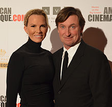

Wayne Douglas Gretzky CC (; born January 26, 1961), former Canadian
professional ice hockey playerand former head coach. He played 20 seasons
in the National Hockey League (NHL) for four teams from 1979 to 1999.
Nicknamed "The Great", many have called him the greatest hockey player of
all time. sportswriters, players, and the NHL itself. Gretzky is the
leading scorer in NHL history, with more goals and assists than any other
player. He has contributed more assists than any other player to score a
total and is the only NHL player to score over 200 points in a single
season, a feat he accomplished four times. In addition, Gretzky has scored
over 100 points in 16 pro seasons, 14 of them in a row. At the time of his
retirement in 1999, he had 61 NHL records: 40 regular season records, 15
playoff records, and 6 recordsAll Star . Born and raised in Brantford,
Ontario , Canada, Gretzky honed his skills in the backyard, regularly
playing field hockey at a level far superior to his peers. Despite his
unimpressive height, strength, and speed, Gretzky's intelligence and
reading of the game is unmatched. He knew how to evade checks from
opposing players, always foresaw where the puck should be, and made the
right move at the right time. Gretzky in what was nicknamed the "Gretzky
office". Gretzky was the top scorer in the 1978 IIHF World Junior
Championship . In June 1978, he signed with the Indianapolis Racers of the
World Hockey Association (WHA), where he played briefly before being
traded to the Edmonton Oilers .
When the WHA folded, the
Oilers joined the NHL, where he set a record streak and led his team to
four Stanley Cup championships . Gretzky's trade to the Los Angeles Kings
on August 9, 1988 had an immediate impact on the team's performance,
eventually leading them to the 1993 Stanley Cup Finals , and is credited
with popularizing hockey in California. Gretzky briefly played for the St.
Louis Bluesbefore ending his career with the New York Rangers . Gretzky
captured nine Hart Trophies as Most Valuable Player, 10 Art Ross Trophies
for most points in a season, two Conn Smith MVP Trophies for the playoffs,
and five Lester B. Pearson Awards (now the Ted Lindsey Award ) for most
outstanding player named by assessment of his peers. He is a Flash leaguer
five times in goals and 16 assists, has won the Lady Byng Memorial Trophy
for sportsmanship and scoring five times, and has frequently opposed
hockey fights . . Upon his retirement in 1999 , Gretzky was immediately
inducted into the Hockey Hall of Fame , making him the last player to have
to waive the waiting period. The NHL retired his jersey number 99 for the
entire league, making him the only player so honored. Gretzky was one of
six players elected to the International Ice Hockey Federation (IIHF)
Centenary All-Star Team . Gretzky as executive director of the Canadian
men's national ice hockey team during the 2002 Winter Olympics , in which
the team won the gold medal. In 2000 he became a co-ownerPhoenix Coyotes ,
and after the 2004–05 NHL lockout, became the team's head coach. In 2004,
Gretzky was inducted into the Ontario Sports Hall of Fame . In September
2009, following the bankruptcy of the Phoenix Coyotes , Gretzky stepped
down as head coach and gave up his share of ownership. In 2016, he became
a partner and vice president of Oilers Entertainment Group .
Moving on to the 1998 Winter Olympics in Nagano , Japan, it was announced that NHL players would be eligible to play for the first time. Gretzky was named to the club on November 29, 1997. However, Gretzky was passed over to the captaincy, along with other Canadian veterans including Steve Yzerman and Ray Burke, in favor of the younger Eric Lindros . Expectations were high for the Canadian team, but the team lost to the Czech Republic in the semi-finals. After overtime, the game went to a 1–1 shootout, but coach Mark Crawford did not select Gretzky as one of the five shooters who failed to score a goal. Team Canada then lost the bronze medal match 3–2 to Finlandand finished without a medal. The Olympics was Gretzky's eighth and last appearance on the national team, culminating in four assists in games. He retired from international play holding the records for most (20), most assists (28), and most points (48) in best-of-the-best hockey.
Gretzky was named Honorary Chairman of the Open Ice Summit , held in August 1999 to discuss ways to improve Canadian ice hockey. He needed to play and practice hockey for the love of the game and believed that skill was more important than talent and that Canada had the potential to be world leaders in skills development. Gretzky was inducted. into the Hockey Hall of Fame on November 22, 1999, on November 10, by a player who overcame a three-year waiting period. The Hall of Fame then announced that he would be the last player to do so. He was inducted into the IIHF Hall of Fame in 2000. Togo, Gretzky's jersey number 99 was retired from the entire league at the 2000 NHL All-Star Game , inspired by Major League Baseball 's removal of the number 42 worn by Jackie Robinson . In October 1999, Edmonton honored Gretzky by renaming one of Edmonton's busiest freeways, Capilano Drive, which runs past the Northlands Coliseum, to Wayne Gretzky Drive .. Also in Edmonton, the local transit authority has assigned bus route number 99, which also runs along Wayne Gretzky Drive.

Gretzky has made several television appearances, including as a celebrity judge for Dance Fever , and had a dramatic role opposite Victor Newman in The Young and the Restless in 1981. In 1984, he traveled to the Soviet Union to film a TV program about Russian goalkeeper Vladislav Tretiak . Gretzky was a guest host on the American late night entertainment show Saturday Night Live in 1989. A fictional crime-fighting version of him served as one of the main characters in the 1991 ProStars cartoon. In December 2016, Gretzky made a brief cameo appearance on the Christmas episode of The Simpsons.like a winter character.
